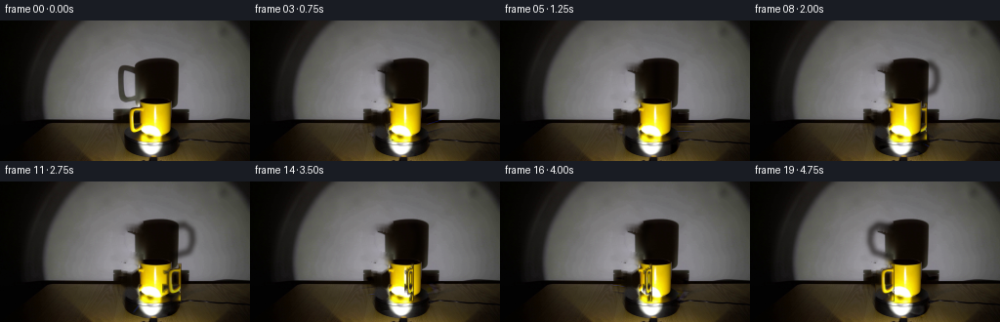
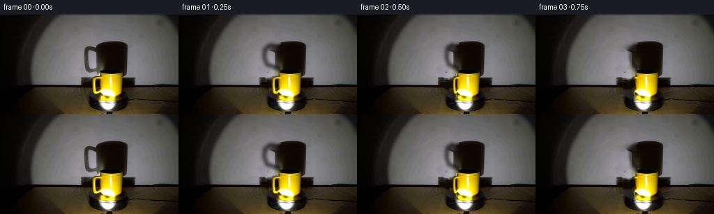

CODING AGENTS AS PIXEL WORLD MODELS
traex/GPT-5.6-Sol · 0077
点击播放 · 原生 RGB 像素
逐轮保存的候选
回放视频、检查图与代码变化。
每份候选均可单独播放。实际图片检查记录在下方工具轨迹中。
候选 01播放与检查图
点击播放 · 原生 RGB 像素


展开代码变化
--- 上一保存版本
+++ 本次保存版本
@@ -0,0 +1,198 @@
+from pathlib import Path
+
+import cv2
+import numpy as np
+from PIL import Image, ImageDraw, ImageFilter
+
+import artifact_io
+
+
+ROOT = Path(__file__).resolve().parent
+W, H = 256, 144
+
+
+def soft_polygon_mask(points, blur=0.8):
+ """Return a small, antialiased mask without relying on vector renderers."""
+ scale = 4
+ canvas = Image.new("L", (W * scale, H * scale), 0)
+ d = ImageDraw.Draw(canvas)
+ d.polygon([(int(x * scale), int(y * scale)) for x, y in points], fill=255)
+ if blur:
+ canvas = canvas.filter(ImageFilter.GaussianBlur(blur * scale))
+ return np.asarray(canvas.resize((W, H), Image.Resampling.LANCZOS), np.float32) / 255.0
+
+
+def over(dst, src, alpha):
+ a = np.clip(alpha, 0, 1)[..., None]
+ return dst * (1.0 - a) + src * a
+
+
+def make_handle_layer(source):
+ """Extract the real yellow handle, including its naturally photographed shading."""
+ hsv = cv2.cvtColor(source, cv2.COLOR_RGB2HSV)
+ yy, xx = np.mgrid[:H, :W]
+ roi = (xx >= 127) & (xx <= 145) & (yy >= 85) & (yy <= 121)
+ # The handle is yellow; this deliberately omits the black opening so that the
+ # actual scene behind the handle remains visible.
+ hue = hsv[..., 0]
+ sat = hsv[..., 1].astype(np.float32)
+ val = hsv[..., 2].astype(np.float32)
+ chroma = roi & (hue >= 12) & (hue <= 47) & (sat > 48) & (val > 54)
+ a = chroma.astype(np.uint8) * 255
+ a = cv2.morphologyEx(a, cv2.MORPH_CLOSE, np.ones((3, 3), np.uint8))
+ a = cv2.GaussianBlur(a, (0, 0), 0.65).astype(np.float32) / 255.0
+ # Crop tightly, retaining the original coordinate relationship to the cup.
+ return source[84:123, 127:146].copy(), a[84:123, 127:146].copy()
+
+
+def projected_handle(source_crop, source_alpha, angle):
+ """Project the vertical handle ring as it revolves around the mug axis."""
+ c = float(np.cos(angle))
+ # At the sides the ring is broad. Front/back it is nearly edge-on.
+ width = max(3, int(round(3 + 16 * abs(c))))
+ rgb = cv2.resize(source_crop, (width, source_crop.shape[0]), interpolation=cv2.INTER_LINEAR)
+ alpha = cv2.resize(source_alpha, (width, source_alpha.shape[0]), interpolation=cv2.INTER_LINEAR)
+ # Horizontal center follows an orthographic projection of a circular orbit.
+ center_x = 157.0 - 20.0 * c
+ x0 = int(round(center_x - width / 2))
+ y0 = 84
+
+ # The far/right face is less directly lit by the lamp. Keep the source's
+ # detailed specular texture while applying only a gentle physical relighting.
+ gain = 0.72 + 0.28 * ((c + 1.0) * 0.5)
+ rgb = np.clip(rgb.astype(np.float32) * gain, 0, 255)
+
+ layer = np.zeros((H, W, 3), np.float32)
+ am = np.zeros((H, W), np.float32)
+ xa, xb = max(0, x0), min(W, x0 + width)
+ ya, yb = max(0, y0), min(H, y0 + rgb.shape[0])
+ if xb > xa and yb > ya:
+ layer[ya:yb, xa:xb] = rgb[ya-y0:yb-y0, xa-x0:xb-x0]
+ am[ya:yb, xa:xb] = alpha[ya-y0:yb-y0, xa-x0:xb-x0]
+ return layer, am
+
+
+def shadow_handle_alpha(angle):
+ """Large, soft wall projection of the same revolving handle."""
+ c = float(np.cos(angle))
+ scale = 4
+ im = Image.new("L", (W * scale, H * scale), 0)
+ d = ImageDraw.Draw(im)
+ # Coordinates model the handle's radial points. Multiplication by cos(angle)
+ # gives the correct side-to-side foreshortening on the wall.
+ cx = 160.0
+ pts0 = [(-15, 47), (-30, 44), (-38, 50), (-39, 62), (-35, 72), (-17, 77)]
+ pts = [(int((cx + dx * c) * scale), int(y * scale)) for dx, y in pts0]
+ d.line(pts, fill=205, width=6 * scale, joint="curve")
+ # Penumbra is important at this scale and matches the soft-edged main shadow.
+ im = im.filter(ImageFilter.GaussianBlur(2.1 * scale))
+ return np.asarray(im.resize((W, H), Image.Resampling.LANCZOS), np.float32) / 255.0
+
+
+def rotating_platform_detail(clean, angle):
+ """Rotate only faint high-frequency texture on the black turntable.
+
+ Illumination stays locked to the room; scratches and surface grain revolve.
+ This is intentionally subtle, as the photographed platform is nearly matte.
+ """
+ low = cv2.GaussianBlur(clean, (0, 0), 2.1)
+ residual = clean - low
+ yy, xx = np.mgrid[:H, :W].astype(np.float32)
+ cx, cy, squash = 156.0, 112.0, 2.45
+ X, Z = xx - cx, (yy - cy) * squash
+ ca, sa = np.cos(-angle), np.sin(-angle)
+ sx = cx + ca * X - sa * Z
+ sy = cy + (sa * X + ca * Z) / squash
+ moved = cv2.remap(residual, sx.astype(np.float32), sy.astype(np.float32),
+ interpolation=cv2.INTER_LINEAR, borderMode=cv2.BORDER_REFLECT)
+
+ # Turntable top and shallow front wall; avoid the mug and the surrounding table.
+ top = ((xx - 156) / 43.0) ** 2 + ((yy - 106) / 16.5) ** 2 < 1.0
+ front = (yy >= 106) & (yy <= 139) & (xx >= 115 + (yy - 106) * 0.75) & (xx <= 197 - (yy - 106) * 0.62)
+ dark = np.max(clean, axis=2) < 105
+ mask = (top | front) & dark
+ # Body is restored later, but suppressing it here also protects edge antialiasing.
+ mask &= ~((xx > 126) & (xx < 181) & (yy > 82) & (yy < 127))
+ mask = cv2.GaussianBlur(mask.astype(np.float32), (0, 0), 0.8)[..., None]
+ return clean + moved * mask * 0.34
+
+
+def main():
+ source = np.asarray(Image.open(ROOT / "first_frame.png").convert("RGB"), np.uint8)
+ srcf = source.astype(np.float32)
+ hsv = cv2.cvtColor(source, cv2.COLOR_RGB2HSV)
+ yy, xx = np.mgrid[:H, :W]
+
+ # A clean plate for the moving handle: remove only its yellow material and a
+ # two-pixel antialiased border. The mug body is separately laid back on top.
+ yellow = ((hsv[..., 0] >= 12) & (hsv[..., 0] <= 47) &
+ (hsv[..., 1] > 45) & (hsv[..., 2] > 50))
+ handle_region = (xx >= 126) & (xx <= 145) & (yy >= 84) & (yy <= 122)
+ hm = (yellow & handle_region).astype(np.uint8)
+ hm = cv2.dilate(hm, np.ones((5, 5), np.uint8), iterations=1) * 255
+ clean = cv2.inpaint(source, hm, 4, cv2.INPAINT_TELEA).astype(np.float32)
+
+ # Remove the original leftward handle lobe from the wall shadow. The central
+ # cylindrical shadow remains untouched and therefore stays exceptionally real.
+ sm = np.zeros((H, W), np.uint8)
+ shadow_path = np.array([[145, 47], [131, 43], [121, 49], [120, 64],
+ [126, 76], [143, 79]], np.int32)
+ cv2.polylines(sm, [shadow_path], False, 255, thickness=12)
+ sm[(yy < 38) | (yy > 87) | (xx < 113) | (xx > 146)] = 0
+ clean = cv2.inpaint(np.clip(clean, 0, 255).astype(np.uint8), sm, 7,
+ cv2.INPAINT_TELEA).astype(np.float32)
+
+ # Exact body cutout. A soft contour preserves the photographed rim, glaze,
+ # specular hotspot, contact edge and subpixel antialiasing.
+ body_alpha = soft_polygon_mask([
+ (142.5, 84), (149, 82.8), (168, 83.1), (175.5, 86.5),
+ (176.2, 105), (174, 116), (169, 122.8), (150, 124.5),
+ (144, 120.5), (142, 108)
+ ], 0.45)
+ handle_crop, handle_alpha = make_handle_layer(source)
+
+ frames = []
+ for i in range(20):
+ if i == 0:
+ # Generation contract: the first frame is not recompressed or redrawn.
+ frames.append(source.copy())
+ continue
+
+ angle = 2.0 * np.pi * i / 20.0 # exactly one clockwise turn in five seconds
+ frame = rotating_platform_detail(clean, angle)
+
+ # Projected handle shadow darkens the clean wall multiplicatively, preserving
+ # its natural wall grain and spotlight color.
+ sha = shadow_handle_alpha(angle)
+ shadow_tint = frame * np.array([0.13, 0.105, 0.08], np.float32)
+ frame = over(frame, shadow_tint, sha * 0.82)
+
+ h_rgb, h_a = projected_handle(handle_crop, handle_alpha, angle)
+ depth = -np.sin(angle) # first quarter turns away: clockwise viewed from above
+
+ # Far-side handle, then body, then near-side handle gives correct occlusion.
+ if depth <= 0:
+ outline = cv2.dilate((h_a * 255).astype(np.uint8), np.ones((3, 3), np.uint8)).astype(np.float32) / 255
+ edge = np.clip(outline - h_a, 0, 1)
+ frame = over(frame, np.full_like(frame, (42, 29, 5)), edge * 0.75)
+ frame = over(frame, h_rgb, h_a)
+
+ frame = over(frame, srcf, body_alpha)
+
+ if depth > 0:
+ outline = cv2.dilate((h_a * 255).astype(np.uint8), np.ones((3, 3), np.uint8)).astype(np.float32) / 255
+ edge = np.clip(outline - h_a, 0, 1)
+ frame = over(frame, np.full_like(frame, (55, 37, 5)), edge * 0.72)
+ frame = over(frame, h_rgb, h_a)
+
+ frames.append(np.clip(np.rint(frame), 0, 255).astype(np.uint8))
+
+ frames = np.stack(frames, axis=0)
+ assert frames.shape == (20, 144, 256, 3)
+ assert frames.dtype == np.uint8
+ assert np.array_equal(frames[0], source)
+ artifact_io.save(frames, ROOT)
+
+
+if __name__ == "__main__":
+ main()
可观测工具轨迹
实际执行的命令与返回图片。
命令 1exit 0
/bin/bash -lc "cat prompt.txt && printf '\\n--- RULES ---\\n' && cat GENERATION_RULES.md"
命令 2exit 0
/bin/bash -lc "find . -maxdepth 2 -type f -printf '%p %s bytes\\n' | sort && python3 - <<'PY'
from PIL import Image
im=Image.open('first_frame.png')
print(im.mode, im.size)
print('extrema',im.getextrema())
PY"命令 3exit 0
/bin/bash -lc "python3 - <<'PY'
import cv2, numpy as np
im=cv2.imread('first_frame.png')[:,:,::-1]
h,w,_=im.shape
# kmeans RGB + XY slight
pix=im.reshape(-1,3).astype(np.float32)
crit=(cv2.TERM_CRITERIA_EPS+cv2.TERM_CRITERIA_MAX_ITER,100,.2)
_, lab, cen=cv2.kmeans(pix,12,None,crit,10,cv2.KMEANS_PP_CENTERS)
lab=lab.ravel()
for i,c in sorted(enumerate(cen), key=lambda x: -np.sum(lab==x[0])):
ys,xs=np.where(lab.reshape(h,w)==i)
print(i, 'n',len(xs),'rgb',np.round(c).astype(int),'bbox', (xs.min(),ys.min(),xs.max(),ys.max()), 'meanxy',(round(xs.mean(),1),round(ys.mean(),1)))
# HSV yellow bins components
hsv=cv2.cvtColor(im[:,:,::-1],cv2.COLOR_BGR2HSV)
for name,mask in [
('yellow', ((hsv[:,:,0]>15)&(hsv[:,:,0]<45)&(hsv[:,:,1]>80)&(hsv[:,:,2]>80))),
('black', (hsv[:,:,2]<50)),
('bright', (hsv[:,:,2]>220)),
('red', ((hsv[:,:,0]<12)|(hsv[:,:,0]>170))&(hsv[:,:,1]>80)&(hsv[:,:,2]>80))]:
n,cc,st,cent=cv2.connectedComponentsWithStats(mask.astype('uint8'))
print('\\n',name,mask.sum())
for j in np.argsort(st[1:,4])[::-1][:10]+1:
if st[j,4]>=5: print(st[j].tolist(),cent[j].round(1).tolist())
# row average and samples
print('\\nrow mean RGB')
for y in range(0,h,8): print(y, np.mean(im[y],axis=0).round().astype(int), np.quantile(im[y],[.1,.5,.9],axis=0).round().astype(int).tolist())
PY"命令 4exit 0
/bin/bash -lc "python3 - <<'PY'
from PIL import Image
import numpy as np, cv2
im=np.array(Image.open('first_frame.png')); hsv=cv2.cvtColor(im,cv2.COLOR_RGB2HSV)
# every 2 pixel, selected central
for y in range(70,144,2):
s=''
for x in range(80,226,2):
r,g,b=im[y:y+2,x:x+2].mean((0,1)); h,sat,v=hsv[y:y+2,x:x+2].mean((0,1))
if v<35: c='K'
elif v<65: c='k'
elif sat>110 and 15<h<45 and v>120: c='Y'
elif sat>80 and r>g*1.1 and g>b*1.5: c='B'
elif v>200 and sat<50:c='W'
elif v>150 and sat<70:c='w'
elif v>105 and sat<70:c='G'
elif v>65 and sat<70:c='g'
elif sat>50 and r>b*1.5:c='b'
else:c='.'
s+=c
print(f'{y:3} {s}')
PY"命令 5exit 0
/bin/bash -lc "python3 - <<'PY'
import cv2, numpy as np
im=cv2.imread('first_frame.png'); rgb=im[:,:,::-1]; hsv=cv2.cvtColor(im,cv2.COLOR_BGR2HSV)
for y in range(35,144):
# yellow-ish broad
m=(hsv[y,:,0]>=12)&(hsv[y,:,0]<=45)&(hsv[y,:,1]>45)&(hsv[y,:,2]>60)
runs=[]; on=False
for x,z in enumerate(m):
if z and not on:a=x;on=True
if on and (not z or x==255):
b=x-1 if not z else x;runs.append((a,b));on=False
runs=[r for r in runs if r[1]-r[0]>=1]
if runs: print(y,runs)
PY"命令 6exit 0
/bin/bash -lc "python3 - <<'PY'
from PIL import Image
import numpy as np,cv2
im=np.array(Image.open('first_frame.png')); hsv=cv2.cvtColor(im,cv2.COLOR_RGB2HSV)
# semantic every 4x4 whole
for y in range(0,144,4):
out=''
for x in range(0,256,4):
p=im[y:y+4,x:x+4]; h,s,v=np.mean(cv2.cvtColor(p,cv2.COLOR_RGB2HSV),(0,1)); r,g,b=p.mean((0,1))
if v<18:c='@'
elif v<35:c='#'
elif v<55:c='K'
elif s>80 and 12<h<50 and v>90:c='Y'
elif v<75:c='k'
elif v<95:c='.'
elif v<120:c='g'
elif v<150:c='G'
elif v<190:c='w'
elif v<225:c='W'
else:c='O'
out+=c
print(f'{y:03} {out}')
PY"命令 7exit 0
/bin/bash -lc "python3 - <<'PY'
from PIL import Image
import numpy as np
im=np.array(Image.open('first_frame.png'))
for y in [80,84,88,92,96,100,104,108,112,116,120,124,128,132,136,140,143]:
print('\\ny=',y)
for x in range(100,221,5): print(f'{x}:{im[y,x].tolist()}',end=' ')
print()
PY"命令 8exit 0
/bin/bash -lc "python3 - <<'PY'
from PIL import Image
import numpy as np
im=np.array(Image.open('first_frame.png'))
V=im.max(2)
for y in range(30,101,2):
print(y, end=' ')
for th in [25,50,80]:
m=V[y]<th;r=[];on=False
for x in range(90,210):
if m[x] and not on:a=x;on=1
if on and ((not m[x]) or x==209):
b=x-1 if not m[x] else x
if b-a>1:r.append((a,b))
on=0
print(th,r,end='; ')
print()
PY"命令 9exit 0
/bin/bash -lc "sed -n '1,240p' artifact_io.py"
命令 10exit 0
/bin/bash -lc "python3 generate.py && python3 - <<'PY'
import numpy as np
from PIL import Image
fs=np.stack([np.array(Image.open(f'frames/{i:02}.png')) for i in range(20)])
s=np.array(Image.open('first_frame.png'))
print(fs.shape,fs.dtype,'first exact',np.array_equal(fs[0],s))
for i in range(20):
d=np.abs(fs[i].astype(int)-s.astype(int)); print(i, 'changed',np.any(d,2).sum(),'mae',round(d.mean(),3),'max',d.max())
PY
ls -lh pixels.npz inspection.png transition_check.png index.html"保存候选 1 份；完成命令 10 次；可验证图片返回 0 张。原始 API 响应与完整日志保留在本地。